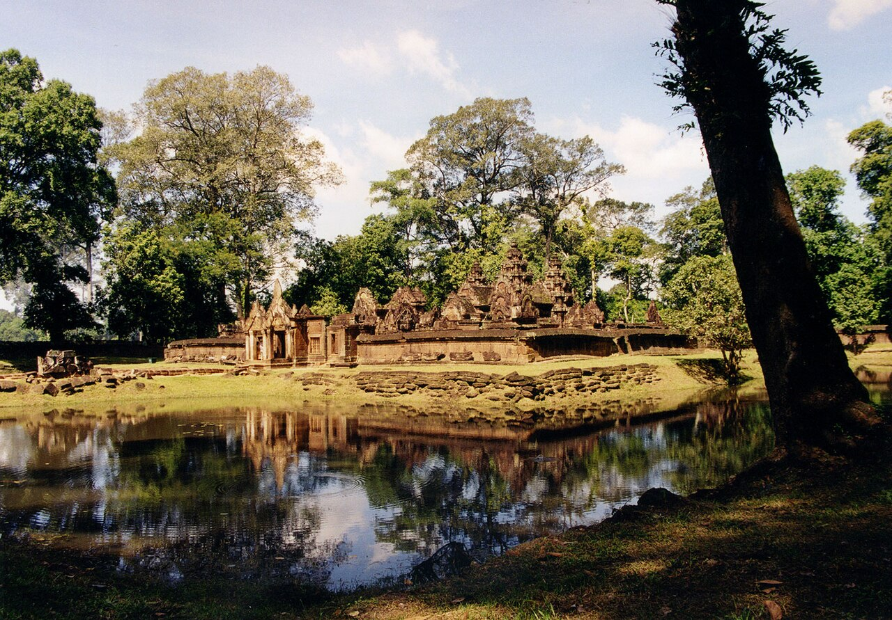

បន្ទាយស្រី — ត្បូងនៃសិល្បៈ
ប្រាសាទឆ្លាក់ពីថ្មភក់ពណ៌ផ្កាឈូក — ស្នាដៃថ្មដ៏ល្អបំផុតដែលដៃខ្មែរធ្លាប់បង្កើត។
ត្បូងនៃសិល្បៈ
បន្ទាយស្រី មានន័យថា «បន្ទាយនៃស្ត្រី» — ជាប្រាសាទតូចមួយ ប៉ុន្តែឆ្លាក់ពីថ្មភក់ពណ៌ផ្កាឈូក ដែលជញ្ជាំងរបស់វាពោរពេញដោយរឿងទេវកថា។ អ្នកប្រាជ្ញជាច្រើនហៅវាថាជាស្នាដៃថ្មដ៏ល្អបំផុតដែលដៃខ្មែរធ្លាប់បង្កើត — ឆ្ងាញ់ដូចក្រណាត់សូត្រ អស់កល្បដូចថ្ម។
អ្វីដែលធ្វើឲ្យបន្ទាយស្រីពិសេស គឺភាពលម្អិតនៃចម្លាក់៖ ផ្តែរទ្វារដែលពោរពេញដោយឈុតឆាកពីរឿងរាមាយណៈ និងទេវកថាហិណ្ឌូ ឆ្លាក់ដោយភាពរស់រវើកដែលហាក់ដូចជាថ្មកំពុងដកដង្ហើម។
ចម្លាក់ទេវកថា
បន្ទាយស្រី ជាកន្លែងដំបូងគេដែលឈុតឆាកទេវកថាពេញលេញត្រូវបានឆ្លាក់នៅលើផ្តែរទ្វារ។ រូបកាឡា — ក្បាលយក្សស៊ីពេលវេលា — និងរូបទេពធីតារាំរែក តុបតែងគ្រប់ជ្រុងនៃប្រាសាទ។
ពណ៌ផ្កាឈូកនៃថ្មភក់ រួមជាមួយពន្លឺពេលព្រឹក និងពេលល្ងាច បង្កើតបានជាទិដ្ឋភាពដ៏ស្រស់ស្អាតបំផុតមួយនៅក្នុងសិល្បៈពិភពលោក។
ការជួសជុល
នៅទសវត្សរ៍ឆ្នាំ ១៩៣០ បន្ទាយស្រីត្រូវបានជួសជុលឡើងវិញដោយវិធីសាស្ត្រ «អាណាស្តូឡូស៊ី» — ការរុះរើ រាប់លេខ និងដំឡើងថ្មឡើងវិញមួយដុំៗ ដូចល្បែងផ្គុំរូបយក្ស។ វិធីសាស្ត្រនេះ ក្រោយមកត្រូវបានអនុវត្តនៅប្រាសាទជាច្រើនទៀតនៅអង្គរ។
សព្វថ្ងៃ បន្ទាយស្រីនៅតែជាកន្លែងដែលអ្នកទស្សនាមកពីទូទាំងពិភពលោកមកកោតសរសើរ — ជាភស្តុតាងថា ភាពស្រស់ស្អាតអាចឆ្លងកាត់ពេលវេលាមួយពាន់ឆ្នាំ។